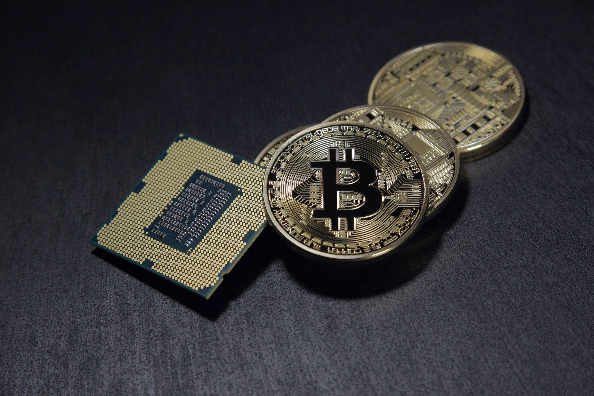

비트코인 5만달러 육박…일주일 만에 27% 치솟은 이유는?
기사입력 2021.02.15 오후 4:24

글로벌 금융기관들이 잇달아 비트코인 투자 의사를 밝히면서 국내외 비트코인 가격이 5만달러에 육박했다.
비트코인이 기존 금융권의 투자자산으로 인정받고 있다는 관측이 나오는 반면, 지나치게 큰 가격 변동성 때문에 금융시장의 불안정성을 키우고 있다는 비판론도 나온다.
14일 오후 9시19분 미국 암호화폐거래소 코인마켓캡에서 비트코인 가격은 4만9485달러를 기록했다.
7일 밤 12시 기준 3만8903달러에서 일주일 새 27.2% 뛰어오른 것이다.
이번 상승세는 최근 비트코인이 제도권에서 투자자산으로 인정받은 영향이 크다고 전문가들은 분석한다.
최근 전문가들이 주목하는 것은 비트코인이 '거래수단'으로 인정받고 있다는 점이다.
반면 거래수단으로 인정받기 어려울 것이란 회의론도 비등하다.
티머시 레인 캐나다 중앙은행 부총재는 10일 "비트코인 가격 급등은 투기적 광기"라며 "암호화폐는 결제수단으로 심각한 결함이 있다"고 지적했다.
글로벌 금융기관들이 잇달아 비트코인 투자 의사를 밝히면서 국내외 비트코인 가격이 5만달러에 육박했다.
비트코인이 기존 금융권의 투자자산으로 인정받고 있다는 관측이 나오는 반면, 지나치게 큰 가격 변동성 때문에 금융시장의 불안정성을 키우고 있다는 비판론도 나온다.
14일 오후 9시19분 미국 암호화폐거래소 코인마켓캡에서 비트코인 가격은 4만9485달러를 기록했다.
7일 밤 12시 기준 3만8903달러에서 일주일 새 27.2% 뛰어오른 것이다.
이번 상승세는 최근 비트코인이 제도권에서 투자자산으로 인정받은 영향이 크다고 전문가들은 분석한다.
최근 전문가들이 주목하는 것은 비트코인이 '거래수단'으로 인정받고 있다는 점이다.
반면 거래수단으로 인정받기 어려울 것이란 회의론도 비등하다.
티머시 레인 캐나다 중앙은행 부총재는 10일 "비트코인 가격 급등은 투기적 광기"라며 "암호화폐는 결제수단으로 심각한 결함이 있다"고 지적했다.
출처 : 박진우 기자, "비트코인 5만달러 육박…일주일 만에 27% 치솟은 이유는?", 한국경제, 2021.02.15, https://www.hankyung.com/economy/article/202102158390i